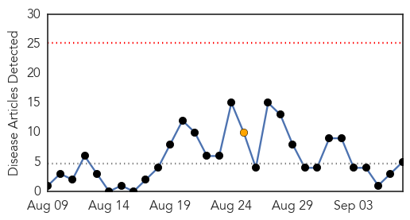
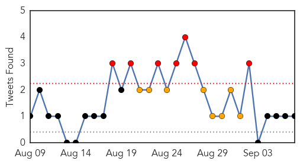
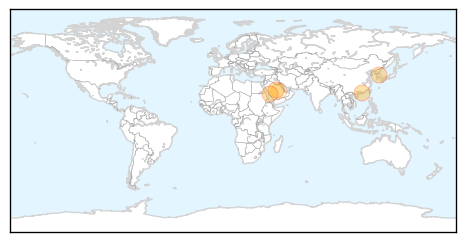
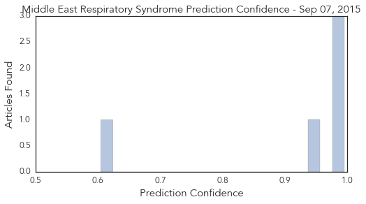

Toggle navigation
Early Warning
Daily Alerts
Middle East Respiratory Syndrome
Sep 07, 2015
Compare to:
-
Dengue Fever
Hemmorhagic Fever
Mold/Fungal Infection
Influenza
Meningitis
Pertussis / Whooping Cough
Cholera
Hepatitis
Chikungunya
Yellow Fever
Bubonic Plague
West Nile Virus
Swine Flu
Ebola
Measles
Unknown
Mumps
30 Day Trends
Web: 0
alerts
, 1
warnings
Twitter: 7
alerts
, 8
warnings
Top Articles:
0.995
WHO Emergency Committee discusses MERS-CoV outbreak
0.990
SCH and HMC Offer Health Safety Tips for Hajj Pilgrims
0.984
Transmission characteristics of MERS and SARS in the healthcare setting: a comparative study
0.950
Transmission characteristics of MERS and SARS in the healthcare setting
0.605
H5N1: Saudi Arabia: School sounds alert over MERS fatality in Al-Kharj
Top Tweets:
0.597
AFD Blog `Saudi MOH Announces 4 New MERS Cases' MERS-CoV http://t.co/xW9XuC7M1D
Web/News Articles

Tweets

Article Locations

Article Confidences
